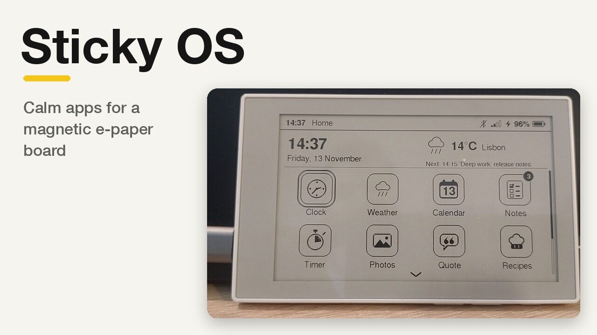
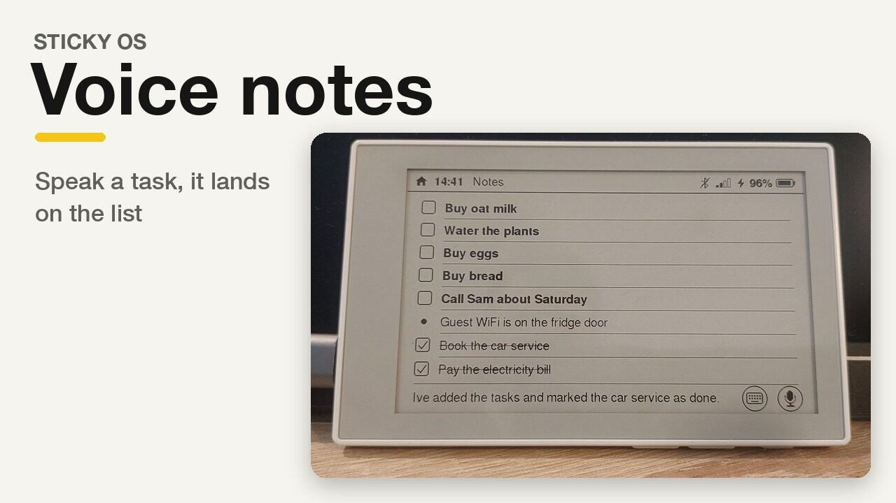
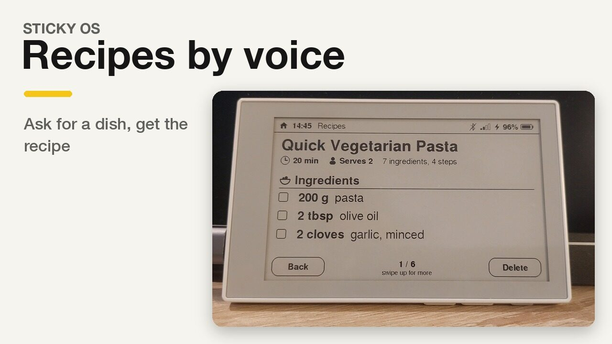

Blog ·
Introducing {{NAME}}: calm apps for a magnetic e-paper board
{{NAME}} 1.0 is out. It is free, open-source firmware that turns the Seeed reTerminal Sticky into a quiet home screen for the fridge door. Here is why it exists, what it does, and a few things I learned making it.

A board that stays still
A phone wants your attention. A board on the fridge should do the opposite: tell you what you need as you walk past, then stay still.
E-paper is made for that. It reads like printed paper in daylight, it keeps its picture with no power at all, and it redraws slowly enough that nothing on it ever flickers for attention. The Seeed reTerminal Sticky puts a 3.97-inch touch e-paper screen on a magnetic back, with an ESP32-S3, 8 MB of PSRAM, a microphone, a battery and three buttons on the top edge. It is a lovely piece of hardware that asked for software built around a glance.
So I wrote some. {{NAME}} gives the board a home screen, a status bar, quick settings and twelve apps, each made to show one thing clearly from across the kitchen. The firmware is on GitHub under the MIT licence.
{{NAME}} is an independent, open-source firmware for the Seeed reTerminal Sticky. Not made by or affiliated with Seeed Studio.
What’s on the board
The board starts on Home. A widget at the top shows the time, the weather and your next event, and below it sits an icon for every app. The icons are live: the clock’s hands move, the calendar shows today’s date, and badges count your open tasks. Swipe down from the status bar for quick settings, or open Settings, which reads like a phone’s: plain headings, a switch or an arrow on each row. Turn the board on its side and the picture turns with it.

The twelve apps:
- Clock: the time in large type, with the room’s temperature and humidity.
- Weather: now and the next five days. Tap a day for its hours, drawn as a chart when the board is held sideways and as a table when it is upright.
- Calendar: paste a calendar link from Google, iCloud or Outlook. Recurring events and time zones are worked out on the board itself.
- Notes: tasks and notes, typed or spoken. Voice uses your own OpenAI key (or a compatible speech server you run).
- Timer: a kitchen timer that rings even with button sounds off.
- Photos: pictures you upload from the browser, dithered to the panel’s four greys.
- Quote of the Day: from ZenQuotes, with an offline list of public-domain quotes for when there’s no WiFi.
- Recipes: say what you want to cook and get a structured recipe with tick-boxes for the ingredients.
- Games: a folder of seven: 2048, Memory, Maths Quest, Daily maths, Quiz, Adventure, and X and O. The AI games fall back to built-in questions and a built-in story without a key.
- Claude usage: this week’s Claude Code usage as a gauge, from an MQTT feed you publish.
- Settings and About.
Voice is the quickest way in. Here it is adding tasks to Notes, and asking Recipes for dinner:




Setup without an app store
There is no companion app to install and no account to make. The setup app is a web page, at sticky-os.space.fast/setup. Open it in Chrome or Edge, plug the board in over USB (Web Serial) or connect over Bluetooth (Web Bluetooth), and add your WiFi, your town, your calendar links and, if you like, an OpenAI key.
Nothing personal is compiled into the firmware. Your settings live on the board, passwords and keys can be written but never read back, and the page talks only to the board on your desk. There is also a demo mode that runs against a simulated board, if you want to look around first.
Under the hood
A small board with a slow screen and a few hundred kilobytes of fast memory makes you careful. A few of the things that shaped {{NAME}}:
Draw only what changed
A partial refresh of the panel takes about 0.6 seconds. Partial refreshes leave faint ghosts behind, so every twelfth one is a full refresh that flashes the screen clean. The panel shows four grey levels. Every screen redraws only when something on it actually changed, so most of the time the board is simply showing a picture and doing nothing at all.
Every byte of internal RAM counted
The ESP32-S3 has plenty of PSRAM but very little fast internal RAM, and internal RAM is what runs out first. The UI loop runs on an 8 KB stack, and the static RAM change of every feature was measured before it went in. Big buffers live in PSRAM. Encrypted connections are expensive too, so the board keeps at most about two TLS sessions open at once.
Never freeze
Early on, a server that accepted a connection and then said nothing could freeze the screen for 124 seconds. Now every network call runs off the UI loop with a bounded timeout: the same silent server gets 8 seconds before the board gives up, and you can cancel before then. A service that keeps failing is asked less often, and errors are written in plain words, such as “The broker refused the login.”, rather than as a code.
Let the browser do the heavy lifting
Photos show the idea best. In the setup app, your browser crops the picture, dithers it to four greys with Floyd–Steinberg, and packs it at 2 bits per pixel, exactly as the panel wants it. The board just copies the bytes to the screen, which takes about 40 ms. A photo is about 120 KB and takes around 20 seconds to send over USB.


Photo: Ansel Adams, The Tetons and the Snake River (1942), Grand Teton National Park. U.S. National Park Service, public domain, via the National Archives.
Calendars go the other way: the board does the work, because it has to read the feed itself. Feeds are streamed rather than loaded whole, and recurring rules, exceptions and time zones are expanded on the board. A 7.4 MB feed with years of history parses in 17 seconds.
Updates that can take themselves back
You flash {{NAME}} over USB once. After that, Settings → Software update fetches new versions from GitHub Releases over WiFi and checks each one’s SHA-256 before installing it. If a new version doesn’t come up healthy, the board rolls back to the one before. I tested that by shipping a deliberately broken build to a board and watching it return. Installing by itself is off by default: you choose when.


Tested by a monkey
Before 1.0, a random “monkey” tester tapped, swiped and pressed its way through every app for three and a half hours without a crash. Fault tests covered the unhappy paths too: servers that go silent, wrong passwords, and replies that make no sense.
Get it
- Download
sticky-os-full.binfrom the latest release on GitHub. - Flash it once over USB, with esptool or Espressif’s ESP Tool in the browser. The README has the commands for macOS, Linux and Windows, and how to keep a copy of the original firmware.
- Open the setup app and add your WiFi.
From then on, updates come from Settings → Software update.
What’s next
Full screen for Photos and Quote is already here: it is now in v1.2. Double-tap a photo or the quote to give it the whole screen, and double-tap again to come back.
Coming in the next update:
- A clear sign of what voice is doing: a Listening card while the board hears you, then a Thinking card while it works out the answer.
- A NEW marker on notes added by voice, so you can see what just landed on the list.
And further out:
- Notes that understand due dates, with “add to calendar” through a QR code you scan with your phone.
- A switch between the chart and the table for the hourly weather.
If you have a reTerminal Sticky, I would love to hear how it goes. Issues and ideas go on GitHub, and contributions are welcome: CONTRIBUTING.md explains how the code is laid out and how to test a change on a real board.